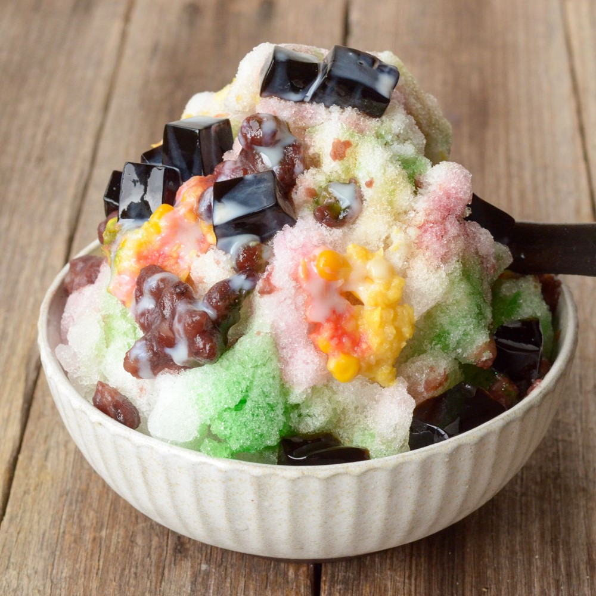
A delicous dessert great for the hot weather in Malaysia. It has corn, red beans, colorful jelly and ice!
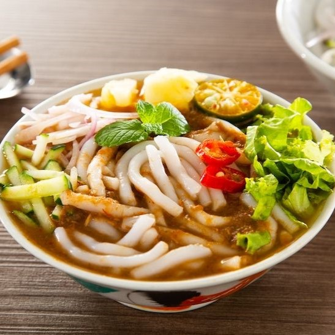
Not to be mistaken with "laksa", a spicy noodle soup, it is the more sour and tangy verison of these noodles.
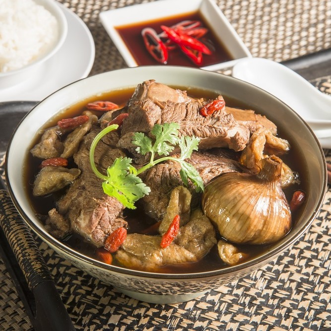
Translated to "Meat Bone Tea", it consists of meat and a tangy soup!
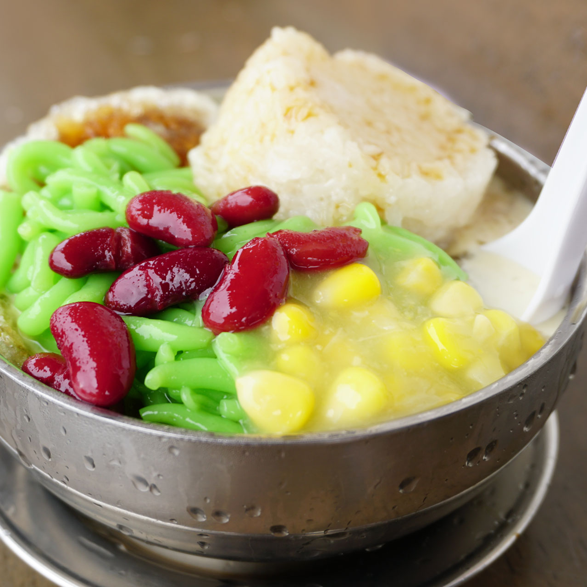
Similar to Ais Kacang, it has red beans, corn and green jelly. It is a cold soup that is great for the hot weather!
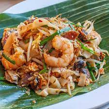
It is fried noodles with shrimp, chili and bean sprouts! It is wrapped with bannana leaves to enhance the flavor.
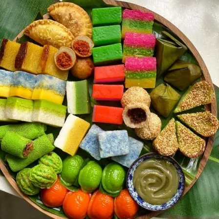
It is an assortment of colorful bite-sized cakes and snacks! There are over 50 kinds of keuhs, each with their unique looks and tastes.
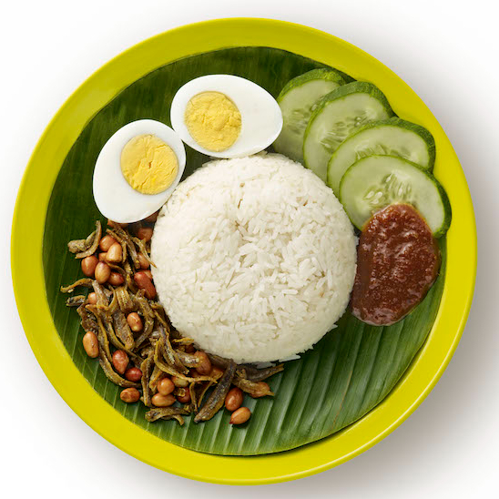
Comprised with coconut rice, peanuts, cucumber, dried anchovies, half a boiled egg and a banana leave at the bottom to amplify the smell.
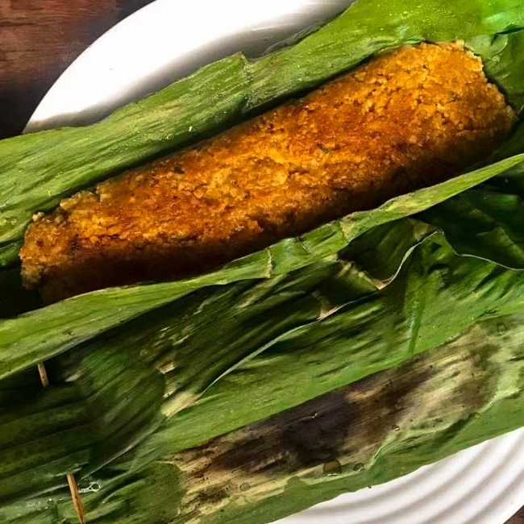
It is consisted of steamed fish custard wrapped with banana leaves!
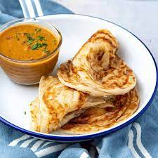
It is a great dish to eat anytime of day! It has fried pancakes with curry sauce!
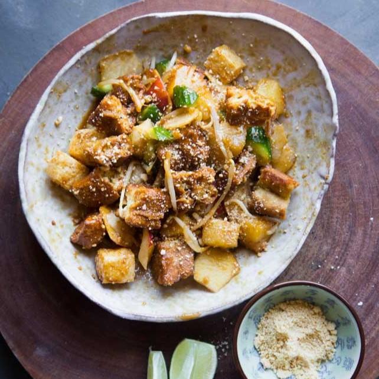
Made with fresh fruits, vegetables, it is covered in sweet, savory, spicy, nutty rojak sauce. This is a great dish to eat as a snack!
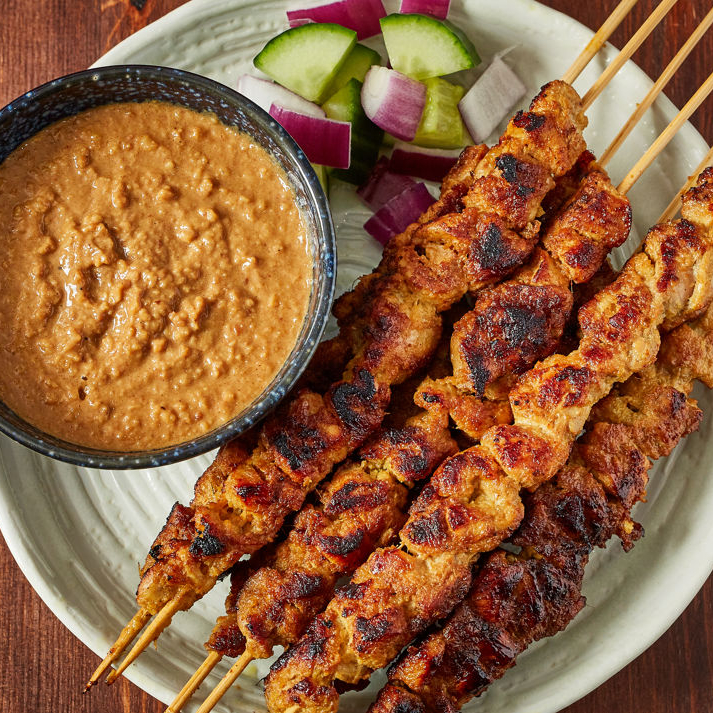
It is a chicken skewer that comes with peanut sauce and cucumbers!
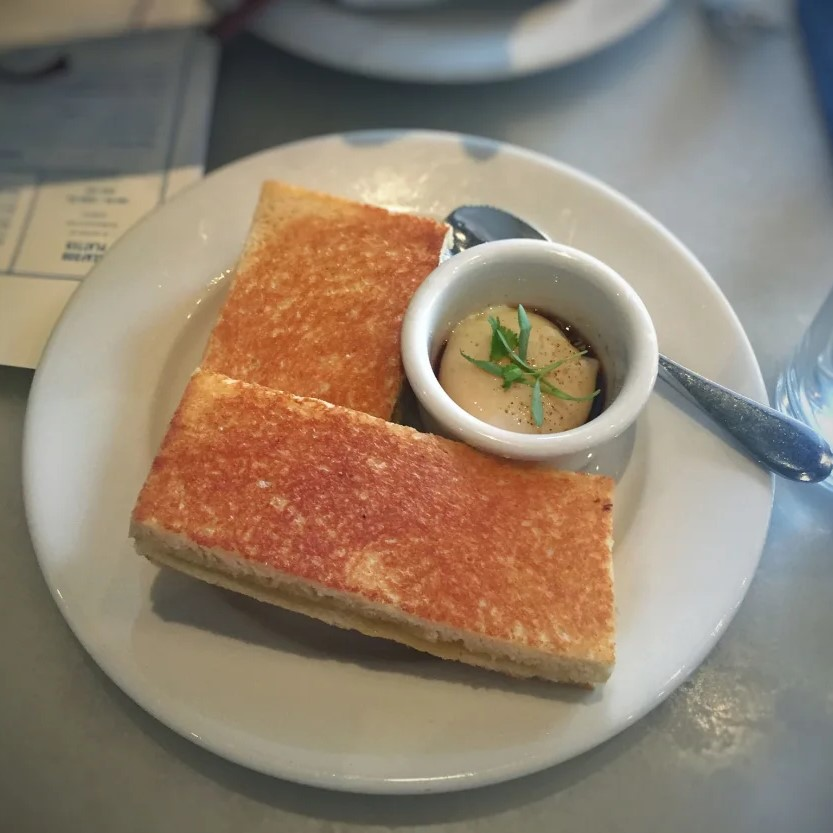
This dish is great for breakfast! It consists of 2 slices of toast with butter and kaya (coconut jam). It is often served with coffee and soil boiled eggs.